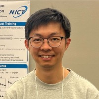

Hour Kaing, Ph.D.
Researcher, National Institute of Information and Communications Technology (NICT)
My research interests include Machine Translation, Language Modeling, and Morphological and Syntax Analysis.
Email: hour_kaing { at } nict { dot } go { dot } jp
Educations
- Ph.D. in Information Science and Engineering,
Nara Institute of Science and Technology (NAIST), 2022 - Master in Informatics,
University of Grenoble 1, 2014 - Bachelor in Information and Communication Engineering,
Institute of Technology of Cambodia (ITC), 2013
Work experiences
- Aug 2022 - Present: Researcher at NICT
- Apr 2018 - Jul 2022 : Technical Researcher at NICT
- Jun 2016 - May 2018 : Researcher and Lecturer at NIPTICT
- Oct 2014 - May 2016 : Researcher and Lecturer at ITC
Arwards
- Sep 2013 : The France Government Scholarships (BGF) for Master Degree in France
- Jun 2012 : SUMITOMO award for excellent students
Activities
- Review: ACL Rolling Review, LREC-COLING, ICON, IEEE Access